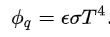

Theory
Thermal radiation occurs through a vacuum or any transparent medium (solid or fluid or gas). It is the transfer of energy by means of photons in electromagnetic waves governed by the same laws.
Thermal radiation is energy emitted by matter as electromagnetic waves, due to the pool of thermal energy in all matter with a temperature above absolute zero. Thermal radiation propagates without the presence of matter through the vacuum of space.
Thermal radiation is a direct result of the random movements of atoms and molecules in matter. Since these atoms and molecules are composed of charged particles (protons and electrons), their movement results in the emission of electromagnetic radiation, which carries energy away from the surface.
The Stefan-Boltzmann equation, which describes the rate of transfer of radiant energy, is as follows for an object in a vacuum :
